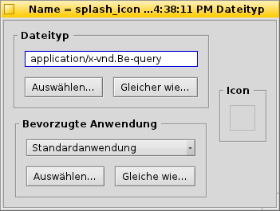
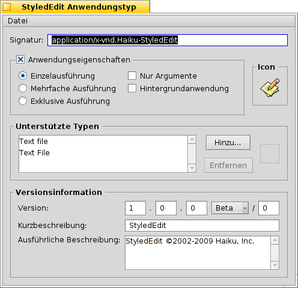

Deutsch
Deutsch Français
Français Italiano
Italiano Русский
Русский Español
Español Svenska
Svenska 日本語
日本語 Українська
Українська 中文 ［中文］
中文 ［中文］ Português
Português Suomi
Suomi Slovenčina
Slovenčina Magyar
Magyar Português (Brazil)
Português (Brazil) English
EnglishDateitypen
Anders als Windows, verlässt sich Haiku zur Bestimmung des Dateityps nicht auf die Dateiendung (beispielsweise ".txt", ".jpg", ".mp3"). Diese Methode wird nur benutzt, wenn keine andere Möglichkeit erfolgreich war. Ansonsten verwendet Haiku MIME Typen, wie sie auch im Internet benutzt werden.
 Setzen des Dateityps einer bestimmten Datei
Setzen des Dateityps einer bestimmten Datei
Man kann den Typ, das Icon und die verknüpfte Anwendung einer bestimmten Datei ändern. Dazu markiert man die Datei und ruft mittels Rechtsklick aus dem Kontextmenü auf.

Der Dateityp
Im obigen Beispiel ist einer Datei der Typ "image/png" zugeordnet; sie wird von Haiku demnach als PNG-Datei erkannt. Sollte es sich tatsächlich jedoch um einen anderen Dateityp handeln, kann man diesen ändern, indem man entweder die korrekte MIME Signatur einträgt, oder auf einen der beiden Buttons unter dem Textfeld klickt:
| zeigt eine hierarchische Liste von Dateitypen, in der man zu image | GIF Image gelangt. | ||
| öffnet einen Dialog zur Auswahl einer Datei, die bereits den entsprechenden MIME-Typ besitzt. |
Die bevorzugte Anwendung
Dieses Menü zeigt eine Liste aller Anwendungen, die mit diesem Dateityp etwas anfangen können. Aus ihr kann man das Programm wählen, das diese eine bestimmte Datei bei einem Doppelklick öffnen soll. So kann man z.B. die bevorzugte Anwendung einer HTML Datei vom Browser zu einem Texteditor ändern, solange man an ihr arbeitet. Jede andere HTML Datei wird weiterhin im Browser geöffnet, nur eben diese eine im Texteditor.
Die ist die für diesen Dateityp global gesetzte Anwendung. Befindet sich die gewünschte Anwendung nicht in dem Menü, finden sich darunter wieder die beiden Buttons und , mit denen man das gleiche machen kann wie schon unter "Der Dateityp" weiter oben beschrieben.
Das Icon
Icons werden normalerweise vom Systemstandard für diesen Dateityp geerbt. Darum muss man sich nicht wundern, wenn das Iconfeld oben rechts im Dialog leer ist. Besitzt eine Datei ein eigenes Icon, lässt es sich im Dateitypen Add-On in das Iconfeld einer anderen Datei ziehen. Oder man doppelklickt in das Iconfeld und baut sich sein eigenes Symbol. Mehr über Icons und ihre Erstellung steht im Kapitel Icon-O-Matic.
Besondere Einstellungen für Anwendungen
Wird das Dateitypen Add-On auf eine Anwendung angewandt, (hier: Texteditor), erscheint ein etwas anderer Dialog:
Ganz oben befindet sich statt des Standard MIME Kennzeichens die eindeutige Signatur der Anwendung. Mit ihr findet das System das Programm, wo immer es auch installiert wurde.
Darunter finden sich eine Reihe von Optionen, die das Verhalten der Anwendung regeln:
| Pro ausführbarer Datei kann die Anwendung nur ein einziges mal laufen. Hat man zwei Kopien des Programms, können diese aber durchaus gleichzeitig ausgeführt werden. | ||
| Die Anwendung kann öfters gestartet werden und läuft dann praktisch mehrmals parallel. | ||
| Es kann wirklich nur eine einzige Anwendung mit dessen genauer Signatur auf einmal laufen. | ||
| Zeigt an, dass die Anwendung nicht auf Messages reagiert. | ||
| Die Anwendung erscheint nicht im Twitcher oder der Liste laufender Programme in der Deskbar. |
Danach folgt eine Liste aller unterstützten Dateitypen. Typen können hinzugefügt (und auch entfernt) werden, wenn man meint die Anwendung käme mit ihnen klar. Als Folge erscheint das Programm im Menü bevorzugter Anwendungen oder in Trackers Kontextmenü bei einem Rechtsklick auf eine Datei dieses Typs.
Ganz unten folgen Informationen zu Version und Copyright. Wie die Signatur, werden auch diese Angaben vom Autor der Anwendung befüllt und sollten nicht verändert werden.
Globale Einstellungen mit den Dateitypen Einstellungen
Die Dateitypen Einstellungen beschäftigen sich nicht mit individuellen Dateien, sondern mit den globalen Einstellung von Dateitypen. Es lassen sich Standardicons und bevorzugte Anwendungen für ganze Dateitypen einstellen, oder Attribute hinzufügen, entfernen oder ändern. Es lassen sich sogar komplett eigene Dateitypen neu erstellen.
Alle Dateitypen und ihre Konfiguration sind in /boot/Benutzer/Konfiguration/settings/beos_mime/ gespeichert. Bevor man mit Experimenten anfängt, sollte man dieses Verzeichnis sichern...
Mehr zu den Dateitypen Einstellungen steht im Workshop: Dateitypen, Attribute, Index und Queries.